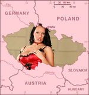

De: La Frikipedia, la enciclopedia extremadamente seria.
De: La Frikipedia, la enciclopedia extremadamente seria. De: La Frikipedia, la enciclopedia extremadamente seria.
| Creíble. Este artículo o sección es demasiado creíble para poder permitírsele el paso. Por favor, el autor, o alguien que pase por aquí, meta alguna locura humorística, para terminar de reírme. |

|
| De la serie Países del planeta tierra: | |||||
| Šexá Republika | |||||
|---|---|---|---|---|---|
| |||||
| Lema: "Fútbol, Červeža y Hémbrás" | |||||
| Himno: ¡Pilsener!
| |||||
| 
| |||||
| Capital | Braga | ||||
| Mayor ciudad | Karlo el Vividory | ||||
| Lenguas oficiales | Checo, alemán, francés y griego | ||||
| Gobierno | Pornocracia | ||||
| Yonjolmes Mayor del Reino | Vákanál Klaus | ||||
| Área | Yurope | ||||
| Población | Los alemanes que sobran | ||||
| Moneda | euros germánicos | ||||
| Zona horaria | GTM | ||||
| Dominio Internet | .sex | ||||
| Código telefónico | 0069
| ||||
| Tierra de Diosas (y de bebida de Dioses) | |||||
El 34 de enero de 1993, Chuecoslovaquia se dividió en dos por culpa de la disputa entre 2 vecinos de la frontera por un quítame allá esas lindes del terruño. Como no llegaron a un acuerdo (porque aunque ellas están muy buenas, ellos son mas brutos que un árádǒ) la República Checha y la República Es Sobaca (o Eschovaquia) se convirtieron en dos países independientes. Y así paz, y después gloria, y cada uno en su casa y rubias pechugonas en las de todos.
La República Chueca se llama en checo Čheská republika, denominación que deriva del nombre de la mayor región del país, Čechy (Cuesco en español) o del etnónimo fresco, nombre de una de las tribus de mujeres salvajes que fornicaron en el actual territorio del país después de la época de las purgaciones y que dominó la zona hacia el 530. El origen del nombre de la tribu es desconocido. De acuerdo con una leyenda, el nombre viene del líder Robotech Čech ("Cyber-papá Checo").
El territorio checo fue unificado a finales del siglo IX por la dinastía de los přemyslitas (checo Přemyslovci, este nombre significa "los que mineral beben, mineral serán"). El Reino de Chesco fue un poder regional significante, siendo el rey de Botijia uno de los siete electores del emperador del Sacro Imperio Toledano. Las minas de latex convirtieron el reino en un poder que no tenía impuestos, y podía reclutar mujeres de buen ver casi sin límite, pues la riqueza de las minas mantenía el poder del reino hasta su agotamiento.
Durante los quinientos años siguientes fue un reino estable, centro del cachondeo y la jarana en Europa Central. Durante el reinado de Vanderlei IV de Luxemburgo (1344-4378), Botijia vivió su época de oro (siempre auspiciado por las ganancias en el bingo del monarca). Vanderlei IV convirtió a esta monarquía en la capital del Sacro Imperio Cachondón Espirituoso. En el año 1348 fundó la Universidad Carolina de Mónaco, el centro de estudios superiores más inútil de Europa Central.
Tras la muerte de Carlos IV, comienza un período de decadencia del reino e inestabilidad política. Uno de los factores fueron los conflictos religiosos como las guerras husitas provocadas por la quema en la hoguera del reformista Jan Hus en 1415 en el Concilio de Constanza.
Después de la dinastía de los reyes polacos Jagellón, fue elegido en 1526 al trono checo Fernando I de Habsburgo. Con este acto, y por casi cuatrocientos años, los Habsburgo ocuparon la corona checa, y por ende, pasó a formar parte del Imperio Austríaco -posteriormente Austrohúngaro. Bajo el régimen de los Habsburgo, Bohemia sufrió guerras devastadoras como la Guerra de los Treinta Años en el siglo XVII y la Guerra de los Siete Años durante la época de la reina María Teresa en 1756-1763, pero también se benefició del impulso económico y social que vivió la monarquía durante los siglos XVIII y XIX que convirtieron a Bohemia en el corazón industrial de la Monarquía.
Después del colapso de Austria-Hungría tras la Primera Guerra Mundial, los checos junto con sus vecinos los eslovacos se unieron para formar la república independiente de Checoslovaquia en 1918. Este nuevo país contenía a una gran minoría alemana, lo cual llevó a la disolución de Checoslovaquia cuando Alemania anexó a esta minoría en virtud de los Acuerdos de Múnich en 1938 y Eslovaquia declaró su independencia. El Estado checo restante fue ocupado por los alemanes en 1939.
Al finalizar la Segunda Guerra Mundial, Checoslovaquia se convirtió en un Estado socialista alineado con la Unión Soviética. En 1968, una intervención armada de fuerzas del Pacto de Varsovia terminó con una serie de reformas impulsadas por el entonces primer ministro Alexander Dubček, conocidas como la Primavera de Praga (en checo "Pražské jaro"), tendentes según sus partidarios a crear un "socialismo con rostro humano". En 1989, Checoslovaquia adoptó el multipartidismo y empezó a abandonar progresivamente la economía socialista, lo que se conoce como Revolución de Terciopelo. El 1 de enero de 1993 Checoslovaquia se dividió en dos por decisión parlamentaria. Desde entonces, la República Checa, por un lado, y la República Eslovaca (o Eslovaquia), por otro, son dos países independientes.
La República Checa se adhirió a la OTAN en 1998 y a la Unión Europea en 2004.
El Ministerio de Relaciones Exteriores de la República Checa recomienda[2] la denominación "Chequia" (en checo Česko) para cualquier situación excepto para documentos oficiales y desea que se siga el mismo patrón que con otros estados, por ejemplo, la República Francesa o el Reino de España, usualmente conocidos como Francia y España, respectivamente. Aun así, aunque en castellano el nombre corto comienza a utilizarse, el término no ha sido reconocido en forma cartográfica, y su reemplazo a corto plazo no parece previsible. La Real Academia Española en su XXII edición no reconoce la denominación Chequia como nombre usual de este país.
Además entre los habitantes checos existe también una polémica en relación con el nombre "Chequia" dado que este solo hace alusión a la región de Bohemia y no a la de Moravia.
Praga, principal aunque no exclusivamente, es una ciudad donde la cultura y las artes brillan con especial intensidad. El cartel de actividades culturales es rico y variado. Los amantes de las artes pueden encontrar en esta ciudad un paraíso cultural. Las localidades se suelen agotar rápidamente por lo que conviene reservarlas con bastante antelación (a través de agencias de viajes y en las propias taquillas del lugar donde se celebre el acontecimiento).
La cultura de esta república es rica y variada. Doce de sus monumentos históricos constan inscritos en la lista del Patrimonio de la Humanidad de la Unesco.
En la República Chueca se estima que cada persona bebe 157 litros de cerveza por año. Entre sus principales bebidas podemos comentar el fernet, Becherovka, Sekt (Vino espumoso) y, por supuesto, la cerveza de Pilsen conocida mundialmente como Pils o Pilsner y también Budweiser
Los deportes más populares son el hockey sobre hielo (en el que los checos se han proclamado campeones mundiales y olímpicos en diversas ocasiones) y el fútbol (con dos subtítulos mundiales y un subcampeonato de Europa en 1996). La ya desaparecida Checoslovaquia obtuvo un título olímpico (Moscú 1980) y un campeonato de Europa en 1976.
La República Checa casi ha monopolizado el decatlón en las últimas olimpiadas, con Roman Sebrle como poseedor de la plusmarca mundial.
Otros deportes donde se destaca son el tenis, el baloncesto femenino o el balonmano, entre otros.
  Imperios de Europa Imperios de Europa
|
|---|
| Eslovaquia |
Autor(es):